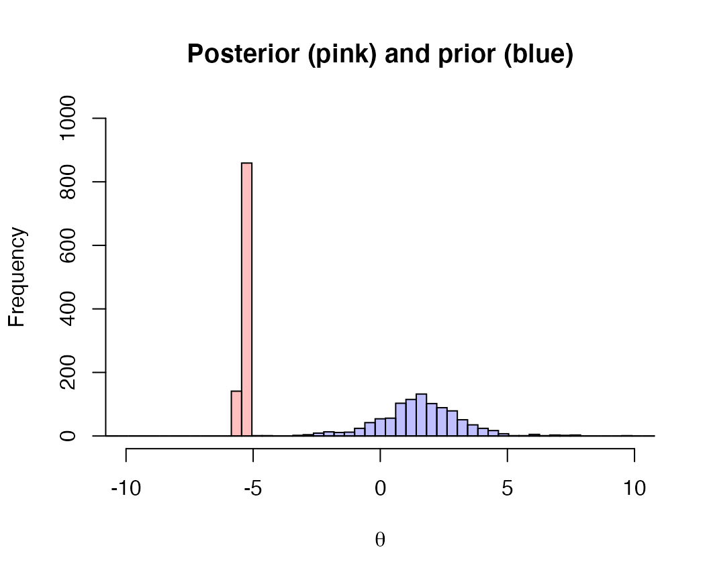
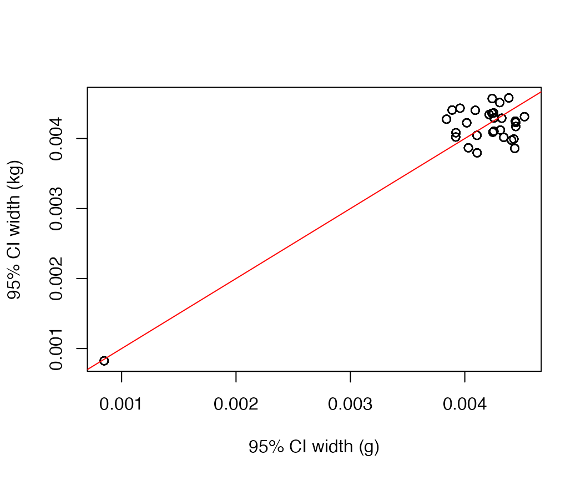

Let’s load the necessary packages:
We first demonstrate prior sensitivity with Chinook genetic stock identification data included with the package.
data(chinook)
# use a subsample
data_matrix = chinook[which(chinook$year==1999 & chinook$season=="Spring"),names(chinook)%in%c("year","season","area")==FALSE]We’ll ignore the important covariates (year, season) and just treat all observations (rows) as replicates.
The overdispersion parameter \(\phi\) is assigned a prior so that \(1/\phi \sim Cauchy(0,\sigma)\) where \(\sigma\) represents the scale parameter. Because \(\phi\) has to be positive, this prior is also assigned a lower bound of 0 (half-Cauchy).
Using our Chinook stock composition data, we can fit the model with several different values of the prior scale, and look at the prior versus posterior draws for \(\phi\). First, we’ll use the default prior of \(\sigma=5\).
set.seed(123)
fit_1 <- fit_trinomix(data_matrix = as.matrix(data_matrix),
overdispersion = TRUE,
overdispersion_sd = 5,
chains=1,
iter=2000, refresh=0)Now we can compare the prior and posterior distributions; because these are skewed, we’ll show them in log-space.
prior = data.frame("value" = fit_1$overdispersion_prior,
"dist"="prior")
post = data.frame("value" = rstan::extract(fit_1$model,"phi")$phi,
"dist"="post")
hist(log(fit_1$overdispersion_prior), breaks=seq(-20,20,length.out=100), col=rgb(0,0,1,1/4), xlim=c(-10,10),ylim=c(0,1000), main="Posterior (pink) and prior (blue)", xlab=expression(phi))
hist(log(rstan::extract(fit_1$model,"phi")$phi),breaks=seq(-20,20,length.out=100), col=rgb(1,0,0,1/4), add=T)
Next we can try re-fitting the model with a lot more informative (smaller) value of \(\sigma\). We can calculate the percent overlap across each iteration to quantify similarity between prior and posterior. For this dataset, prior \(\sigma\) values < 5 translate into high overlap (> 50%) between prior and posterior.
df = data.frame("sd"=exp(seq(log(0.001),log(10),length.out=10)),overlap=0)
for(i in 1:nrow(df)) {
fit_1 <- fit_trinomix(data_matrix = as.matrix(data_matrix),
overdispersion = TRUE,
overdispersion_sd = df$sd[i],
chains=1,
iter=2000, refresh=0)
df$overlap[i] = length(which(fit_1$overdispersion_prior < max(rstan::extract(fit_1$model,"phi")$phi))) / length(fit_1$overdispersion_prior)
}
plot(df$sd,df$overlap, xlab="Prior SD", ylab="% Overlap",main="",type="b")We will demonstrate this sensitivity with the cod stomach contents data included with the package.
We’ll ignore the important covariates (year, season) and just treat all observations (rows) as replicates.
The overdispersion parameter \(\phi\) is assigned a prior so that \(1/\phi \sim Cauchy(0,\sigma)\) where \(\sigma\) represents the scale parameter. Because \(\phi\) has to be positive, this prior is also assigned a lower bound of 0 (half-Cauchy).
Using our cod diet data, we can fit the model with several different values of the prior scale, and look at the prior versus posterior draws for \(\phi\). First, we’ll use the default prior of \(\sigma=5\).
set.seed(123)
fit_1 <- fit_trinomix(data_matrix = as.matrix(data_matrix),
overdispersion = TRUE,
overdispersion_sd = 5,
chains=1,
iter=2000, refresh=0)Now we can compare the prior and posterior distributions; because these are skewed, we’ll show them in log-space.
prior = data.frame("value" = fit_1$overdispersion_prior,
"dist"="prior")
post = data.frame("value" = rstan::extract(fit_1$model,"phi")$phi,
"dist"="post")
hist(log(fit_1$overdispersion_prior), breaks=seq(-20,20,length.out=100), col=rgb(0,0,1,1/4), xlim=c(-10,10),ylim=c(0,1000), main="Posterior (pink) and prior (blue)", xlab=expression(phi))
hist(log(rstan::extract(fit_1$model,"phi")$phi),breaks=seq(-20,20,length.out=100), col=rgb(1,0,0,1/4), add=T)Next we can try re-fitting the model with a lot more informative (smaller) value of \(\sigma\). We can calculate the percent overlap across each iteration to quantify similarity between prior and posterior.
df = data.frame("sd"=exp(seq(log(0.001),log(0.1),length.out=10)),overlap=0)
for(i in 1:nrow(df)) {
fit_1 <- fit_trinomix(data_matrix = as.matrix(data_matrix),
overdispersion = TRUE,
overdispersion_sd = df$sd[i],
chains=1,
iter=2000, refresh=0)
df$overlap[i] = length(which(fit_1$overdispersion_prior < max(rstan::extract(fit_1$model,"phi")$phi))) / length(fit_1$overdispersion_prior)
}
plot(df$sd,df$overlap, xlab="Prior SD", ylab="% Overlap",main="",type="b")